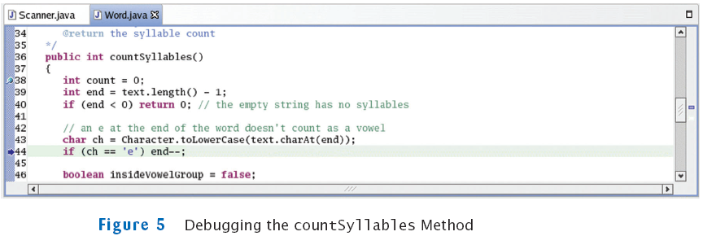

previous
|
start
|
next
Debug the Program
Buggy output (for input "
hello yellow peach
"):
Syllables in hello: 1
Syllables in yellow: 1
Syllables in peach: 1
Set breakpoint in first line of
countSyllables
of
Word
class
Start program, supply input. Program stops at breakpoint
Method checks if final letter is
'e'

Check if this works: step to line where check is made and inspect variable
ch
Should contain final letter but contains
'l'
previous
|
start
|
next